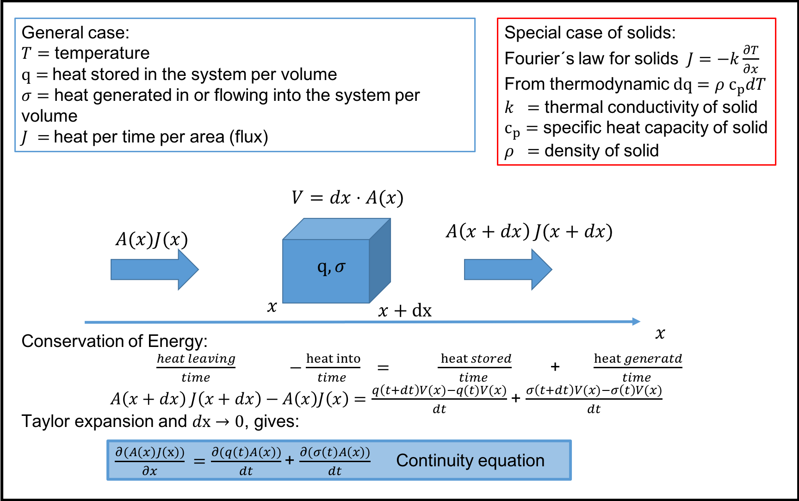

Solving linear systems
Solving linear equations
There are a number of excellent books covering this topic, see e.g. [1] [2] [3] [4]. In most of the examples covered in this course we will encounter problems where we have a set of linearly independent equations and one equation for each unknown. For these type of problems there are a number of methods that can be used, and they will find a solution in a finite number of steps. If a solution cannot be found it is usually because the equations are not linearly independent, and our formulation of the physical problem is wrong.Assume that we would like to solve the following set of equations: $$ \begin{align} 2x_0+x_1+x_2+3x_3&=1,label{eq:lin:la} \\ x_0+x_1+3x_2+x_3&=-3,label{eq:lin:lb} \\ x_0+4x_1+x_2+x_3&=2,label{eq:lin:lc} \\ x_0+x_1+x_2+x_3&=1.label{eq:lin:ld} \end{align} $$ These equations can be written in matrix form as: $$ \begin{equation} \mathbf{A\cdot x}=\mathbf{b}, \tag{2.1} \end{equation} $$ where: $$ \begin{equation} \mathbf{A}\equiv\begin{pmatrix} 2&1&1&3\\ 1&1&3&1\\ 1&4&1&1\\ 1&1&2&2 \end{pmatrix} \qquad \mathbf{b}\equiv \begin{pmatrix} 1\\-3\\2\\1 \end{pmatrix} \qquad \mathbf{x}\equiv \begin{pmatrix} x_0\\x_1\\x_2\\x_3 \end{pmatrix}. \tag{2.2} \end{equation} $$ You can easily verify that \( x_0=-4, x_1=1, x_2=-1, x_3= 3 \) is the solution to the above equations by direct substitution. If we were to replace one of the above equations with a linear combination of any of the other equations, e.g. replace equation \eqref{eq:lin:ld} with \( 3x_0+2x_1+4x_2+4x_3=-2 \), there would be no unique solution (infinite number of solutions). This can be checked by calculating the determinant of the matrix \( \mathbf{A} \), if \( \det \mathbf{A}=0 \), What is the difficulty in solving these equations? Clearly if none of the equations are linearly dependent, and we have \( N \) independent linear equations, it should be straight forward to solve them? Two major numerical problems are i) even if the equations are not exact linear combinations of each other, they could be very close, and as the numerical algorithm progresses they could at some stage become linearly dependent due to roundoff errors. ii) roundoff errors may accumulate if the number of equations are large [1].
Gauss-Jordan elimination
Let us continue the discussion by consider Gauss-Jordan elimination, which is a direct method. A direct method uses a final set of operations to obtain a solution. According to [1] Gauss-Jordan elimination is the method of choice if we want to find the inverse of \( \mathbf{A} \). However, it is slow when it comes to calculate the solution of equation (2.1). Even if speed and memory use is not an issue, it is also not advised to first find the inverse, \( \mathbf{A}^{-1} \), of \( \mathbf{A} \), then multiply it with \( \mathbf{b} \) to obtain the solution, due to roundoff errors (Roundoff errors occur whenever we subtract to numbers that are very close to each other). To simplify our notation, we write equation (2.2) as: $$ \begin{equation} \left( \begin{array}{cccc|c} 2&1&1&3&1\\ 1&1&3&1&-3\\ 1&4&1&1&2\\ 1&1&2&2&1 \end{array} \right). \tag{2.3} \end{equation} $$ The numbers to the left of the vertical dash is the matrix \( \mathbf{A} \), and to the right is the vector \( \mathbf{b} \). The Gauss-Jordan elimination procedure proceeds by doing the same operation on the right and left side of the dash, and the goal is to get only zeros on the lower triangular part of the matrix. This is achieved by multiplying rows with the same (nonzero) number, swapping rows, adding a multiple of a row to another: $$ \begin{align} &\left( \begin{array}{cccc|c} 2&1&1&3&1\\ 1&1&3&1&-3\\ 1&4&1&1&2\\ 1&1&2&2&1 \end{array} \right)\to \left( \begin{array}{cccc|c} 2&1&1&3&1\\ 0&1/2&5/2&-1/2&-7/2\\ 0&7/2&1/2&-1/2&3/2\\ 0&1/2&3/2&1/2&1/2 \end{array} \right)\to\tag{2.4}\\ &\left( \begin{array}{cccc|c} 2&1&1&3&1\\ 0&1/2&5/2&-1/2&-7/2\\ 0&0&-17&3&26\\ 0&0&1&-1&4 \end{array} \right) \to \left( \begin{array}{cccc|c} 2&1&1&3&1\\ 0&1/2&5/2&-1/2&-7/2\\ 0&0&-17&3&26\\ 0&0&0&14/17&42/17 \end{array} \right)\no \end{align}$$ The operations done are: (\( 1\to2 \)) multiply first row with \( -1/2 \) and add to second, third and the fourth row, (\( 2\to 3 \)) multiply second row with \( -7 \), and add to third row, multiply second row with \( -1 \) and add to fourth row, (\( 3\to4 \)) multiply third row with \( -1/17 \) and add to fourth row. These operations can easily be coded into Python:
A = np.array([[2, 1, 1, 3,],[1, 1, 3, 1],
[1, 4, 1, 1, ],[1, 1, 2, 2 ]],float)
b = np.array([1,-3,2,1],float)
N=4
# Gauss-Jordan Elimination
for i in range(1,N):
fact = A[i:,i-1]/A[i-1,i-1]
A[i:,] -= np.outer(fact,A[i-1,])
b[i:] -= b[i-1]*fact
Notice that the final matrix has only zeros beyond the diagonal, such a matrix is called upper triangular. We still have not found the final solution, but from an upper triangular (or lower triangular) matrix it is trivial to determine the solution. The last row immediately gives us \( 14/17z=42/17 \) or \( z=3 \), now we have the solution for z and the next row gives: \( -17y+3z=26 \) or \( y=(26-3\cdot3)/(-17)=-1 \), and so on. In a more general form, we can write our solution of the matrix \( \mathbf{A} \) after making it upper triangular as: $$ \begin{equation} \begin{pmatrix} a^\prime_{0,0}&a^\prime_{0,1}&a^\prime_{0,2}&a^\prime_{0,3}\\ 0&a^\prime_{1,1}&a^\prime_{1,2}&a^\prime_{1,3}\\ 0&0&a^\prime_{2,2}&a^\prime_{2,3}\\ 0&0&0&a^\prime_{3,3} \end{pmatrix} \cdot \begin{pmatrix} x_0\\ x_1\\ x_2\\ x_3 \end{pmatrix} = \begin{pmatrix} b^\prime_{0}\\ b^\prime_{1}\\ b^\prime_{2}\\ b^\prime_{3} \end{pmatrix} \tag{2.5} \end{equation} $$ The back substitution can then be written formally as: $$ \begin{equation} x_i=\frac{1}{a^\prime_{ii}}\left[b_i^\prime-\sum_{j=i+1}^{N-1}a^\prime_{ij}x_j\right],\quad i=N-1,N-2,\ldots,0 \tag{2.6} \end{equation} $$ The back substitution can now easily be implemented in Python as:
# Back substitution
sol = np.zeros(N,float)
sol[N-1]=b[N-1]/A[N-1,N-1]
for i in range(2,N+1):
sol[N-i]=(b[N-i]-np.dot(A[(N-i),],sol))/A[N-i,N-i]
Notice that in the Python implementation, we have used vector operations instead of for loops. This makes the code more efficient, but it could also be implemented with for loops:
# Back substitution - for loop
sol = np.zeros(N,float)
for i in range(N-1,-1,-1):
sol[i]= b[i]
for j in range(i+1,N):
sol[i] -= A[i][j]*sol[j]
sol[i] /= A[i][i]
There are at least two things to notice with our implementation:
- Matrix and vector notation makes the code more compact and efficient. In order to understand the implementation it is advised to put \( i=1, 2, 3, 4 \), and then execute the statements in the Gauss-Jordan elimination and compare with equation (2.4).
- The implementation of the Gauss-Jordan elimination is not robust, in particular one could easily imagine cases where one of the leading coefficients turned out as zero, and the routine would fail when we divide by
A[i-1,i-1]. By simply changing equation \eqref{eq:lin:lb} to \( 2x_0+x_1+3x_2+x_3=-3 \), when doing the first Gauss-Jordan elimination, both \( x_0 \) and \( x_1 \) would be canceled. In the next iteration we try to divide next equation by the leading coefficient of \( x_1 \), which is zero, and the whole procedure fails.
Pivoting
The solution to the last problem is solved by what is called pivoting. The element that we divide on is called the pivot element. It actually turns out that even if we do Gauss-Jordan elimination without encountering a zero pivot element, the Gauss-Jordan procedure is numerically unstable in the presence of roundoff errors [1]. There are two versions of pivoting, full pivoting and partial pivoting. In partial pivoting we only interchange rows, while in full pivoting we also interchange rows and columns. Partial pivoting is much easier to implement, and the algorithm is as follows:- Find the row in \( \mathbf{A} \) with largest absolute value in front of \( x_0 \) and change with the first equation, switch corresponding elements in \( \mathbf{b} \)
- Do one Gauss-Jordan elimination, find the row in \( \mathbf{A} \) with the largest absolute value in front of \( x_1 \) and switch with the second (same for \( \mathbf{b} \)), and so on.
LU decomposition
As we have already seen, if the matrix \( \mathbf{A} \) is reduced to a triangular form it is trivial to calculate the solution by using back substitution. Thus if it was possible to decompose the matrix \( \mathbf{A} \) as follows: $$ \begin{align} &\mathbf{A}=\mathbf{L}\cdot\mathbf{U}label{eq:lin:lu}\\ &\begin{pmatrix} a_{0,0}&a_{0,1}&a_{0,2}&a_{0,3}\\ a_{1,0}&a_{1,1}&a_{1,2}&a_{1,3}\\ a_{2,0}&a_{2,1}&a_{2,2}&a_{2,3}\\ a_{3,0}&a_{3,1}&a_{3,2}&a_{3,3} \end{pmatrix} = \begin{pmatrix} l_{0,0}&0&0&0\\ l_{1,0}&l_{1,1}&0&0\\ l_{2,0}&l_{2,1}&l_{2,2}&0\\ l_{3,0}&l_{3,1}&l_{3,2}&l_{3,3} \end{pmatrix} \cdot \begin{pmatrix} u_{0,0}&u_{0,1}&u_{0,2}&u_{0,3}\\ 0&u_{1,1}&u_{1,2}&u_{1,3}\\ 0&0&u_{2,2}&u_{2,3}\\ 0&0&0&u_{3,3} \end{pmatrix}.\no \end{align}$$ The solution procedure would then be to rewrite equation (2.1) as: $$ \begin{align} \mathbf{A\cdot x}=\mathbf{L}\cdot\mathbf{U}\cdot\mathbf{x}=\mathbf{b},label{eq:lin:matb} \end{align} $$ If we define a new vector \( \mathbf{y} \): $$ \begin{align} \mathbf{y}\equiv\mathbf{U}\cdot\mathbf{x}, \tag{2.7} \end{align} $$ we can first solve for the \( \mathbf{y} \) vector: $$ \begin{align} \mathbf{L}\cdot\mathbf{y}=\mathbf{b},label{eq:lin:for} \end{align} $$ and then for \( \mathbf{x} \): $$ \begin{align} \mathbf{U}\cdot\mathbf{x}=\mathbf{y}. \tag{2.8} \end{align} $$ Note that the solution to equation \eqref{eq:lin:for} would be done by forward substitution: $$ \begin{equation} y_i=\frac{1}{l_{ii}}\left[b_i-\sum_{j=0}^{i-1}l_{ij}x_j\right],\quad i=1,2,\ldots N-1. \tag{2.9} \end{equation} $$ Why go to all this trouble? First of all it requires (slightly) less operations to calculate the LU decomposition and doing the forward and backward substitution than the Gauss-Jordan procedure discussed earlier. Secondly, and more importantly, is the fact that in many cases one would like to calculate the solution for different values of the \( \mathbf{b} \) vector in equation \eqref{eq:lin:matb}. If we do the LU decomposition first we can calculate the solution quite fast using backward and forward substitution for any value of the \( \mathbf{b} \) vector.The NumPy function solve, uses LU decomposition and partial pivoting, and we can find the solution to our previous problem simply by the following code:
from numpy.linalg import solve
x=solve(A,b)
Iterative methods
The methods described so far are what is called direct methods. The direct methods for very large systems might suffer from round off errors. That means that even if the computer has found a solution, the solution is "polluted" by round off errors, or stated more clearly: your solution for \( \mathbf{x} \), when entered into the original equation \( \mathbf{A}\mathbf{x}\neq\mathbf{b} \). Below we will describe one trick, and two alternative methods to the direct methods.Iterative improvement
The first method [5] assumes that we already have solved the matrix equation (2.1), and obtained an estimate \( \mathbf{\hat{x}} \) of the true solution \( \mathbf{x} \). Assume that \( \mathbf{\hat{x}}=\mathbf{x}+\delta\mathbf{x} \), and that $$ \begin{equation} \mathbf{A}\cdot\mathbf{\hat{x}}=\mathbf{A}\cdot(\mathbf{x}+\delta\mathbf{x})=\mathbf{b}+\delta\mathbf{b}, \tag{2.10} \end{equation} $$ subtracting equation (2.1) we get $$ \begin{equation} \mathbf{A}\cdot\delta\mathbf{x}=\delta\mathbf{b}. \tag{2.11} \end{equation} $$ Solving equation (2.10) for \( \delta\mathbf{b} \) an inserting in the equation above, we get $$ \begin{equation} \mathbf{A}\cdot\delta\mathbf{x}=\mathbf{A}\cdot\mathbf{\hat{x}}-\mathbf{b}. \tag{2.12} \end{equation} $$ The usefulness of this method assumes that we have already obtained the LU decomposition of \( \mathbf{A} \), and if possible one should use a higher precision to calculate the right hand side, since there will be a lot of cancellations. Then the whole computational process it is simply to calculate the right hand side and backsubstitute. The improved solution is then obtained by subtracting \( \delta\mathbf{x} \) from \( \mathbf{\hat{x}} \).The Jacobi method
A completely different approach is the Jacobian method, which is simply to decompose the \( \mathbf{A} \) matrix in the following way $$ \begin{align} &\mathbf{A}=\mathbf{D}+\mathbf{R}label{eq:lin:DR}\\ &\begin{pmatrix} a_{0,0}&a_{0,1}&a_{0,2}&a_{0,3}\\ a_{1,0}&a_{1,1}&a_{1,2}&a_{1,3}\\ a_{2,0}&a_{2,1}&a_{2,2}&a_{2,3}\\ a_{3,0}&a_{3,1}&a_{3,2}&a_{3,3} \end{pmatrix} = \begin{pmatrix} a_{0,0}&0&0&0\\ 0&a_{1,1}&0&0\\ 0&0&a_{2,2}&0\\ 0&0&0&a_{3,3} \end{pmatrix} + &\begin{pmatrix} 0&a_{0,1}&a_{0,2}&a_{0,3}\\ a_{1,0}&0&a_{1,2}&a_{1,3}\\ a_{2,0}&a_{2,1}&0&a_{2,3}\\ a_{3,0}&a_{3,1}&0&a_{3,3} \end{pmatrix}.\no \end{align}$$ We can then write equation (2.1) as $$ \begin{equation} \mathbf{D}\mathbf{x}=\mathbf{b}-\mathbf{R}\cdot\mathbf{x}. \tag{2.13} \end{equation} $$ How does this help us? First of all, the matrix \( \mathbf{D} \) is easy to invert as it is diagonal, the inverse can be found by simply replace \( a_{ii}\to 1/a_{ii} \). But \( \mathbf{x} \) is still present on the right hand side? This is where the iterations comes into play, we simply guess at an initial solution \( \mathbf{x}^k \), and then we use equation (2.13) to calculate the next solution \( \mathbf{x}^{k+1} \), and so on $$ \begin{equation} \mathbf{x}^{k+1}=\mathbf{D}^{-1}(\mathbf{b}-\mathbf{R}\cdot\mathbf{x}^{k}). \tag{2.14} \end{equation} $$ Lets write it out on component form for a \( 4\times4 \) matrix to see what is going on $$ \begin{align} x_0 &=\frac{1}{a_{00}}(b_0-a_{01}x_1^k-a_{02}x_2^k-a_{03}x_3^k),label{eq:lin:jc3a}\\ x_1 &=\frac{1}{a_{11}}(b_0-a_{00}x_0^k-a_{02}x_2^k-a_{03}x_3^k),label{eq:lin:jc3b}\\ x_2 &=\frac{1}{a_{22}}(b_0-a_{00}x_0^k-a_{01}x_1^k-a_{03}x_3^k),label{eq:lin:jc3c}\\ x_3 &=\frac{1}{a_{33}}(b_0-a_{00}x_0^k-a_{01}x_1^k-a_{02}x_2^k).label{eq:lin:jc3d} \end{align} $$ Below is a Python implementation
def solve_jacobi(A,b,x=np.zeros(len(b)),max_iter=1000,EPS=1e-6):
"""
Solves the linear system Ax=b using the jacobi method, stops if
solution is not found after max_iter or if solution changes less
than EPS
"""
D=np.diag(A)
R=A-np.diag(D)
eps=1
x_old=x
iter=0
while(eps>EPS and iter<max_iter):
iter+=1
x=(b-np.dot(R,x_old))/D
eps=np.abs(np.sum(x-x_old))
x_old=x
print('found solution after ' + str(iter) +' iterations')
return x
The iterative method can be appealing if we do not need a high accuracy, we can choose to stop whenever \( |\mathbf{x}^{k+1}-\mathbf{x}^k| \) is small enough. For the direct method we have to follow through all the way.
The Gauss-Seidel method
It is tempting in equation \eqref{eq:lin:jc3a} to use our estimate of \( x_0^{k+1} \) in the next equation, equation \eqref{eq:lin:jc3b}, instead of \( x_0^k \). After all our estimate \( x_0^{k+1} \) is an improved estimate. This is actually the Gauss-Seidel method. This method also has the advantage that if there are memory issues, one can overwrite the old value of \( x_i^k \). Usually the Gauss-Seidel method converges faster, but not always. A plus for the Jacobi method is that is can be parallelised, as the calculations is only dependent on the old values and do not require information about the new values as for the Gauss Seidel method. Below is a Python implementation of the Gauss-Seidel method
def solve_GS(A,b,x=np.zeros(len(b)),max_iter=1000,EPS=1e-6):
"""
Solves the linear system Ax=b using the Gauss-Seidel method, stops if
solution is not found after max_iter or if solution changes less
than EPS
"""
D=np.diag(A)
R=A-np.diag(D)
eps=1
iter=0
while(eps>EPS and iter<max_iter):
iter+=1
eps=0.
for i in range(len(x)):
tmp=x[i]
x[i]=w*(b[i]- np.dot(R[i,:],x))/D[i]
eps+=np.abs(tmp-x[i])
print('found solution after ' + str(iter) +' iterations')
return x
Example: Linear regression
In the previous section, we considered a system of \( N \) equations and \( N \) unknown (\( x_0, x_1,\ldots, x_N \)). In general we might have more equations than unknowns or more unknowns than equations. An example of the former is linear regression, we might have many data points and we would like to fit a line through the points. How do you fit a single lines to more than two points that does not line on the same line? One way to do it is to minimize the distance from the line to the points, as illustrated in figure 6.
Figure 6: Linear regression by minimizing the total distance to all the points.

Mathematically we can express the distance between a data point \( (x_i,y_i) \) and the line \( f(x) \) as \( y_i-f(x_i) \). Note that this difference can be negative or positive depending if the data point lies below or above the line. We can then take the absolute value of all the distances, and try to minimize them. When we minimize something we take the derivative of the expression and put it equal to zero. As you might remember from Calculus it is extremely hard to work with the derivative of the absolute value, because it is discontinuous. A much better approach is to square each distance and sum them: $$ \begin{equation} S=\sum_{i=0}^{N-1}(y_i-f(x_i))^2=\sum_{i=0}^{N-1}(y_i-a_0-a_1x_i)^2. \tag{2.15} \end{equation} $$ (For the example in figure 6, \( N=5 \).) This is the idea behind least square, and linear regression. One thing you should be aware of is that points lying far from the line will contribute more to equation (2.15). The underlying assumption is that each data point provides equally precise information about the process, this is often not the case. When analyzing experimental data, there may be points deviating from the expected behaviour, it is then important to investigate if these points are more affected by measurements errors than the others. If that is the case one should give them less weight in the least square estimate, by extending the formula above: $$ \begin{equation} S=\sum_{i=0}^{N-1}\omega_i(y_i-f(x_i))^2=\sum_{i=0}^3\omega_i(y_i-a_0-a_1x_i)^2, \tag{2.16} \end{equation} $$ \( \omega_i \) is a weight factor.
Solving least square, using algebraic equations
Let us continue with equation (2.15), the algebraic solution is to simply find the value of \( a_0 \) and \( a_1 \) that minimizes \( S \): $$ \begin{align} \frac{\partial S}{\partial a_0} &=-2\sum_{i=0}^{N-1}(y_i-a_0-a_1x_i)=0, \tag{2.17} \\ \frac{\partial S}{\partial a_1} &=-2\sum_{i=0}^{N-1}(y_i-a_0-a_1x_i)x_i=0. \tag{2.18} \end{align} $$ Defining the mean value as \( \overline{x}=\sum_ix_i/N \) and \( \overline{y}=\sum_iy_i/N \), we can write equation (2.17) and (2.18) as: $$ \begin{align} \sum_{i=0}^{N-1}(y_i-a_0-a_1x_i)&=N\overline{y}-a_0N-a_1N\overline{x}=0, \tag{2.19} \\ \sum_{i=0}^{N-1}(y_i-a_0-a_1x_i)x_i&=\sum_iy_ix_i-a_0N\overline{x}-a_1\sum_ix_ix_i=0. \tag{2.20} \end{align} $$ Solving equation (2.19) with respect to \( a_0 \), and inserting the expression into equation (2.20), we find: $$ \begin{align} a_0&=\overline{y}-a_1\overline{x},label{eq:lin:ls1c} \\ a_1&=\frac{\sum_iy_ix_i-N\overline{x}\overline{y}}{\sum_ix_i^2-N\overline{x}^2} =\frac{\sum_i(x_i-\overline{x})(y_i-\overline{y})}{\sum_i(x_i-\overline{x})^2}. \tag{2.21} \end{align} $$ We leave it as an exercise to show the last expression for \( a_1 \). Clearly the equation (2.21) above will in most cases have a solution. But in addition to a solution, it would be good to have an idea of the goodness of the fit. Intuitively it make sense to add all the distances (residuals) \( d_i \) in figure 6. This is basically what is done when calculating \( R^2 \) (R-squared). However, we would also like to compare the \( R^2 \) between different datasets. Therefor we need to normalize the sum of residuals, and therefore the following form of the \( R^2 \) is used: $$ \begin{equation} R^2=1-\frac{\sum_{i=0}^{N-1}(y_i-f(x_i))^2}{\sum_{i=0}^{N-1}(y_i-\overline{y})^2}. \tag{2.22} \end{equation} $$ In python we can implement equation \eqref{eq:lin:ls1c}, (2.21) and (2.22) as:
def OLS(x, y):
# returns regression coefficients
# in ordinary least square
# x: observations
# y: response
# R^2: R-squared
n = np.size(x) # number of data points
# mean of x and y vector
m_x, m_y = np.mean(x), np.mean(y)
# calculating cross-deviation and deviation about x
SS_xy = np.sum(y*x) - n*m_y*m_x
SS_xx = np.sum(x*x) - n*m_x*m_x
# calculating regression coefficients
b_1 = SS_xy / SS_xx
b_0 = m_y - b_1*m_x
#R^2
y_pred = b_0 + b_1*x
S_yy = np.sum(y*y) - n*m_y*m_y
y_res = y-y_pred
S_res = np.sum(y_res*y_res)
return(b_0, b_1,1-S_res/S_yy)
Least square as a linear algebra problem
It turns out that the least square problem can be formulated as a matrix problem. (Two great explanations see linear regression by matrices, and $R^2$-squared.) If we define a matrix \( \mathbf{X} \) containing the observations \( x_i \) as: $$ \begin{align} \mathbf{X} &= \begin{pmatrix} 1&x_0\\ 1&x_1\\ \vdots&\vdots\\ 1&x_{N-1} \end{pmatrix}. \tag{2.23} \end{align}$$ We introduce a vector containing all the response \( \mathbf{y} \), and the regression coefficients \( \mathbf{a}=(a_0,a_1) \). Then we can write equation (2.16) as a matrix equation: $$ \begin{equation} S=(\mathbf{y}-\mathbf{X\cdot a})^T(\mathbf{y}-\mathbf{X\cdot a}). \tag{2.24} \end{equation} $$ Note that this equation can easily be extended to more than one observation variable \( x_i \). By simply differentiating equation (2.24) with respect to \( \mathbf{a} \), we can show that the derivative has a minimum when (see proof below): $$ \begin{equation} \mathbf{X}^T\mathbf{X a}=\mathbf{X}^T\mathbf{y} \tag{2.25} \end{equation} $$ Below is a python implementation of equation (2.25).
def OLSM(x, y):
# returns regression coefficients
# in ordinary least square using solve function
# x: observations
# y: response
XT = np.array([np.ones(len(x)),x],float)
X = np.transpose(XT)
B = np.dot(XT,X)
C = np.dot(XT,y)
return solve(B,C)
Working with matrices on component form
Whenever you want to do some manipulation with matrices, it is very useful to simply write them on component form. If we multiply two matrices \( \mathbf{A} \) and \( \mathbf{B} \) to form a new matrix \( \mathbf{C} \), the components of the new matrix is simply \( \mathbf{C}_{ij}=\sum_k\mathbf{A}_{ik}\mathbf{B}_{kj} \). The strength of doing this is that the elements of a matrix, e.g. \( \mathbf{A}_{ik} \) are numbers, and we can move them around. Proving that e.g. \( (\mathbf{A}\mathbf{B})^T=\mathbf{B}^T\mathbf{A}^T \) is straight forward using the component form. The transpose of a matrix is simply to exchange columns and rows, hence \( \mathbf{C}_{ij}^T=\mathbf{C}_{ji} \) $$ \begin{equation} \mathbf{C}_{ij}^T=\mathbf{C}_{ji}=\sum_k\mathbf{A}_{jk}\mathbf{B}_{ki}=\sum_k\mathbf{B}^T_{ik}\mathbf{A}^T_{kj} =(\mathbf{B}^T\mathbf{A}^T)_{ij}, \tag{2.26} \end{equation} $$ thus \( \mathbf{C}^T=\mathbf{B}^T\mathbf{A}^T \). To derive equation (2.25), we need to take the derivative of equation (2.25) with respect to \( \mathbf{a} \). What we mean by this is that we want to evaluate \( \partial S/\partial a_k \) for all the components of \( \mathbf{a} \). A useful rule is \( \partial a_i/\partial a_k=\delta_{ik} \), where \( \delta_{ik} \) is the Kronecker delta, it takes the value of one if \( i=k \) and zero otherwise. We can write \( S=\mathbf{y}^T\mathbf{y}-\mathbf{y}\mathbf{X\cdot a} -(\mathbf{X\cdot a})^T\mathbf{y}-(\mathbf{X\cdot a})^T\mathbf{X\cdot a} \). All terms that do not contain \( \mathbf{a} \) are zero, thus we only need to evaluate the following terms $$ \begin{align} \frac{\partial}{a_k}(\mathbf{X\cdot a})^T\mathbf{y} &=\frac{\partial}{a_k}(\mathbf{a}^T\cdot \mathbf{X}^T\mathbf{y})=\frac{\partial}{a_k}\sum_{ij}\mathbf{a}^T_i\mathbf{X}^T_{ij}\mathbf{y}_j =\sum_{ij}\delta_{ik}\mathbf{X}^T_{ij}\mathbf{y}_j\no \tag{2.27}\\ &=\sum_{j}\mathbf{X}^T_{kj}\mathbf{y}_j=\mathbf{X}^T\mathbf{y} \tag{2.28}\\ \frac{\partial}{a_k}\mathbf{y}^T\mathbf{X\cdot a}&=\frac{\partial}{a_k}\sum_{ij}\mathbf{y}^T_i\mathbf{X}_{ij}\mathbf{a}_j =\sum_{ij}\mathbf{y}^T_i\mathbf{X}_{ij}\delta_{jk}=\sum_{j}\mathbf{y}^T_{i}\mathbf{X}_{ik}\no \tag{2.29}\\ &=\sum_{j}\mathbf{y}^T_{i}\mathbf{X}^T_{ki}=\mathbf{X}^T\mathbf{y} \tag{2.30}\\ \frac{\partial}{a_k} (\mathbf{X\cdot a})^T\mathbf{X\cdot a}&= \frac{\partial}{a_k}\sum_{ijl} \mathbf{a}^T_i\mathbf{X}^T_{ij}\mathbf{X}_{jl}\mathbf{a}_l= \sum_{ijl}(\delta_{ik}\mathbf{X}^T_{ij}\mathbf{X}_{jl}\mathbf{a}_l+\mathbf{a}^T_i\mathbf{X}^T_{ij}\mathbf{X}_{jl}\delta_{lk})\no \tag{2.31}\\&=\sum_{jl}\mathbf{X}^T_{kj}\mathbf{X}_{jl} \mathbf{a}_l+\sum_{ij}\mathbf{a}^T_i\mathbf{X}^T_{ij}\mathbf{X}_{jk}\no \tag{2.32}\\ &=\mathbf{X}^T\mathbf{X}\mathbf{a}+\sum_{ij}\mathbf{X}^T_{kj}\mathbf{X}_{ji}\mathbf{a}_i = 2\mathbf{X}^T\mathbf{X}\mathbf{a}. \label{} \end{align} $$ It then follows that \( \partial S/\partial \mathbf{a} = 0 \) when $$ \begin{equation} \mathbf{X}^T\mathbf{X a}=\mathbf{X}^T\mathbf{y}. \tag{2.33} \end{equation} $$Sparse matrices and Thomas algorithm
In many practical examples, such as solving partial differential equations the matrices could be quite large and also contain a lot of zeros. A very important class of such matrices are banded matrices this is a type of sparse matrices containing a lot of zero elements, and the non-zero elements are confined to diagonal bands. In the following we will focus on one important type of sparse matrix the tridiagonal. In the next section we will show how it enters naturally in solving the heat equation. It turns out that solving banded matrices is quite simple, and can be coded quite efficiently. As with the Gauss-Jordan example, lets consider a concrete example: $$ \begin{align} &\left( \begin{array}{ccccc|c} b_0&c_0&0&0&0&r_0\\ a_1&b_1&c_1&0&0&r_1\\ 0&a_2&b_2&c_2&0&r_2\\ 0& 0&a_3&b_3&c_3&r_3\\ 0& 0& 0&a_4&b_4&r_4 \end{array} \right) \tag{2.34} \end{align}$$ The right hand side is represented with \( r_i \). The first Gauss-Jordan step is simply to divide by \( b_0 \), then we multiply with \( -a_1 \) and add to second row: $$ \begin{align} \to \left( \begin{array}{ccccc|c} 1&c_0^\prime&0&0&0&r_0^\prime\\ 0&b_1-a_1c_0^\prime&c_1&0&0&r_1-a_0r_0^\prime\\ 0&a_2&b_2&c_2&0&r_2\\ 0& 0&a_3&b_3&c_3&r_3\\ 0& 0& 0&a_4&b_4&r_4 \end{array} \right), \tag{2.35} \end{align}$$ Note that we have introduced some new symbols to simplify the notation: \( c_0^\prime=c_0/b_0 \) and \( r_0^\prime=r_0/b_0 \). Then we divide by \( b_1-a_1c_0^\prime \): $$ \begin{align} &\left( \begin{array}{ccccc|c} 1&c_0^\prime&0&0&0&r_0^\prime\\ 0&1&c_1^\prime&0&0&r_1^\prime\\ 0&a_2&b_2&c_2&0&r_2\\ 0& 0&a_3&b_3&c_3&r_3\\ 0& 0& 0&a_4&b_4&r_4 \end{array} \right), \tag{2.36} \end{align}$$ where \( c_1^\prime=c_1/(b_1-a_1c_0^\prime) \) and \( r_1^\prime=(r_1-a_0r_0^\prime)/(b_1-a_1c_0^\prime) \). If you continue in this manner, you can easily convince yourself that to transform a tridiagonal matrix to the following form: $$ \begin{align} \to \left( \begin{array}{ccccc|c} 1&c_0^\prime&0&0&0&r_0^\prime\\ 0&1&c_1^\prime&0&0&r_1^\prime\\ 0&0&1&c_2^\prime&0&r_2^\prime\\ 0& 0&0&1&c_3^\prime&r_3^\prime\\ 0& 0& 0&0&1&r_4^\prime \end{array} \right), \tag{2.37} \end{align}$$ where: $$ \begin{align} c_0^\prime =\frac{c_0}{b_0} \qquad &r_0^\prime={r_0}{b_0} \tag{2.38} \\ c_i^\prime =\frac{c_i}{b_i-a_ic_{i-1}^\prime}\qquad &r_i^\prime=\frac{r_i-a_ir_{i-1}^\prime}{b_i-a_ic_{i-1}^\prime} \quad\text{, for }i=1,2,\ldots,N-1label{eq:lin:thi} \end{align} $$ Note that we where able to reduce the tridiagonal matrix to an upper triangular matrix in only one Gauss-Jordan step. This equation can readily be solved using back-substitution, which can also be simplified as there are a lot of zeros in the upper part. Let us denote the unknowns \( x_i \) as we did for the Gauss-Jordan case, now we can find the solution as follows: $$ \begin{align} x_{N-1} & = r_{N-1}^\prime \tag{2.39} \\ x_i & = r_i^\prime-x_{i+1}c_i^\prime\quad\text{, for } i=N-2,N-3,\ldots,0 \tag{2.40} \end{align} $$ Equation (2.38), \eqref{eq:lin:thi}, (2.39) and (2.40) is known as the Thomas algorithm after Llewellyn Thomas.solve function in
python. If this gives a solution, then pivoting combined with the
Thomas algorithm might do the trick.
Example: Solving the heat equation using linear algebra
Exercise 2.1: Conservation Equation or the Continuity Equation
Figure 7: Conservation of energy and the continuity equation.

In figure 7, the continuity equation is derived for heat flow. In the case of heat exchange for a solid, we can show that it can be written: $$ \begin{equation} \frac{d^2T}{dx^2}+\frac{\dot{\sigma}}{k}=\frac{\rho c_p}{k}\frac{dT}{dt}, \tag{2.41} \end{equation} $$ where \( \dot{\sigma} \) is the rate of heat generation in the solid. This equation can be used as a starting point for many interesting models. In this exercise we will investigate the steady state solution, steady state is just a fancy way of expressing that we want the solution that does not change with time. This is achieved by ignoring the derivative with respect to time in equation (2.41). We want to study a system with size \( L \), and is it good practice to introduce a dimensionless variable: \( y=x/L \). Equation (2.41) can now be written: $$ \begin{equation} \frac{d^2T }{dy^2}+\frac{\dot{\sigma}L^2}{k}=0 \tag{2.42} \end{equation} $$
Exercise 2.2: Curing of Concrete and Matrix Formulation
Curing of concrete is one particular example that we can investigate with equation (2.42). When concrete is curing, there are a lot of chemical reactions happening, these reactions generate heat. This is a known issue, and if the temperature rises too much compared to the surroundings, the concrete may fracture. In the following we will, for simplicity, assume that the rate of heat generated during curing is constant, $\dot{\sigma}=$100 W/m$^3$. The left end (at \( x=0 \)) is insulated, meaning that there is no flow of heat over that boundary, hence \( dT/dx=0 \) at \( x=0 \). On the right hand side the temperature is kept constant, \( x(L)=y(1)=T_1 \), assumed to be equal to the ambient temperature of $T_1=25^\circ$C. The concrete thermal conductivity is assumed to be \( k=1.65 \) W/m$^\circ$C.
We leave it as an exercise to show that the analytical solution to equation (2.42) in this case is: $$ \begin{equation} T(y)=\frac{\dot{\sigma}L^2}{2k}(1-y^2)+T_1. \tag{2.43} \end{equation} $$ In order to solve equation (2.42) numerically, we need to discretize it. We replace the second derivative with \( dT/dy^2=(T(y+dy)+T(y-dy)-2T(y))/dy^2 \). Equation (2.41) can now be written: $$ \begin{equation} T_{i+1}+T_{i-1}-2T_i=-h^2\beta, \tag{2.44} \end{equation} $$ where \( \beta=\dot{\sigma}L^2/k \).
Figure 8: Finite difference grid for \( N=4 \).

In figure 8, the finite difference grid is shown for \( N=4 \). Let us write down equation (2.44) for each grid node to see how the implementation is done in practice: $$ \begin{align} T_{-1}+T_1-2T_0 &=-h^2\beta,\no \tag{2.45}\\ T_{0}+T_2-2T_1 &=-h^2\beta,\no \tag{2.46}\\ T_{1}+T_3-2T_2 &=-h^2\beta,\no \tag{2.47}\\ T_{2}+T_4-2T_3 &=-h^2\beta.\no \tag{2.48}\\ \tag{2.49} \end{align} $$ The tricky part is now to introduce the boundary conditions. The right hand side is easy, because here the temperature is \( T_4=25 \). However, we see that \( T_{-1} \) enters and we have no value for this node. The boundary condition on the left hand side is \( dT/dy=0 \), by using the central difference for the derivative allows us to write: $$ \begin{equation} \left.\frac{dT}{dy}\right|_{y=0}=\frac{T_{-1}-T_1}{2h}=0, \tag{2.50} \end{equation} $$ hence \( T_{-1}=T_1 \). Thus the final set of equations are: $$ \begin{align} 2T_1-2T_0 &=-h^2\beta,\no \tag{2.51}\\ T_{0}+T_2-2T_1 &=-h^2\beta,\no \tag{2.52}\\ T_{1}+T_3-2T_2 &=-h^2\beta,\no \tag{2.53}\\ T_{2}+25-2T_3 &=-h^2\beta,\no \tag{2.54}\\ \tag{2.55} \end{align} $$ or in matrix form: $$ \begin{align} \left( \begin{array}{cccc} -2&2&0&0\\ 1&-2&1&0\\ 0&1&-2&1\\ 0&0&1&-2\\ \end{array} \right) \left( \begin{array}{c} T_0\\ T_1\\ T_2\\ T_3\\ \end{array} \right) = \left( \begin{array}{c} -h^2\beta\\ -h^2\beta\\ -h^2\beta\\ -h^2\beta-25\\ \end{array} \right). \tag{2.56} \end{align} \tag{2.57}$$ Note that it is now easy to increase \( N \) as it is only the boundaries that requires special attention.
- Solve the set of equations using numpy.linalg.solve.
solve function. You can use the %timeit magic command in Ipython and Jupyter notebooks to test the efficiency.
#%matplotlib inline
import numpy as np
import scipy as sc
import scipy.sparse.linalg
from numpy.linalg import solve
import matplotlib.pyplot as plt
# Set simulation parameters
h = 0.25 # element size
L = 1.0 # length of domain
n = int(round(L/h)) # number of unknowns
x=np.arange(n+1)*h # includes right bc
T1=25
sigma = 100*L**2/1.65
def tri_diag(a, b, c, k1=-1, k2=0, k3=1):
""" a,b,c diagonal terms """
return np.diag(a, k1) + np.diag(b, k2) + np.diag(c, k3)
def analytical(sigma,x):
return sigma*(1-x*x)/2+T1
#Create matrix for linalg solver
a=np.ones(n-1)
b=-np.ones(n)*2
c=np.ones(n-1)
#Create matrix for sparse solver
diagonals=np.zeros((3,n))
diagonals[0,:]= 1
diagonals[1,:]= -2
diagonals[2,:]= 1
# rhs vector
d=np.repeat(-h*h*sigma,n)
#----boundary conditions ------
#lhs - no flux of heat
diagonals[2,1]= 2
c[0]=2
#rhs - constant temperature
d[n-1]=d[n-1]-T1
#------------------------------
A=tri_diag(a,b,c)
A_sparse = sc.sparse.spdiags(diagonals, [-1,0,1], n, n,format='csc')
# to view matrix
print(A_sparse.todense())
#Solve linear problems
Ta = solve(A,d,)
Tb = sc.sparse.linalg.spsolve(A_sparse,d)
#Add right boundary node
Ta=np.append(Ta,T1)
Tb=np.append(Tb,T1)
#uncomment to test efficiency
#%timeit sc.sparse.linalg.spsolve(A_sparse,d)
#%timeit solve(A,d,)
# Plot solutions
plt.plot(x,Ta,x,Tb,'-.',x,analytical(sigma,x),':', lw=3)
plt.xlabel("Dimensionless length")
plt.ylabel(r"Temperature [$^\circ$C]")
plt.xlim(0,1)
plt.ylim(T1-1)
plt.legend(['sparse','linalg','analytical'])
plt.grid()
plt.show()
CO$_2$ diffusion into aquifers
The transport of CO$_2$ into aquifers can be described according to the diffusion equation $$ \begin{equation} \frac{\partial C(z,t)}{\partial t}=\frac{\partial }{\partial z}\left(K(z)\frac{\partial C(z,t)}{\partial z}\right), \tag{2.58} \end{equation} $$ where \( C(z,t) \) is the concentration of \co\ as a function of depth (\( z \)) and time \( t \), and \( K(z) \) is the diffusion constant of \co\ as a function of depth. This equation can be discretized using standard techniques, to help in that respect consider figure 9.
Figure 9: Discretization for diffusion of \co\ into an aquifer, including boundary conditions.

In the following we will assume that there are only four nodes (\( i=0\ldots 3 \)) in the physical domain, and two ghost nodes \( i=-1 \), and \( i=4 \). There are many ways to attack this problem, but in the following we will borrow ideas from Finite Volume. Finite volume methods is a way of discretizing equations such that we conserve mass. The diffusion equation as it is derived in figure 7, express that the flux of something (heat, particles, etc) leaving the box surface minus the flux entering the surface of the box is equal to the rate of change of something inside the box. We can formulate this mathematically as: $$ \begin{equation} \frac{\partial C(z,t)}{\partial t}\simeq\frac{1}{h}\left[\left.K(z)\frac{\partial C(z,t)}{\partial z}\right|_{i+1/2} -\left.K(z)\frac{\partial C(z,t)}{\partial z}\right|_{i-1/2}\right] \tag{2.59} \end{equation} $$ The notation \( i\pm1/2 \), means that the flux is to be evaluated at the surface of the box (i.e. halfway between the red dots in figure 9). \( K(z) \) is the diffusion constant, and it is known everywhere, so this is simple to evaluate at the surface. The concentrations are only known at the center of each box, the red dots in figure 9. The derivative of the concentration can be evaluated using the central difference formula (remember that the distance between the red dot and edge of the box is \( h/2 \)), hence $$ \begin{equation} \frac{C_i^{n+1}-C_i^n}{\Delta t}=\frac{1}{h}\left[K_{i+1/2}\frac{ C_{i+1}-C_{i}}{h}-K_{i-1/2}\frac{ C_{i}-C_{i-1}}{h}\right], \tag{2.60} \end{equation} $$ notice that we have discretized the time derivative, and that we have introduced \( n \) to indicate the time step. On the right hand side there are is no time indicated, it turns out that we have a choice to put time step \( n \) or \( n+1 \) on the concentrations on the right hand side. If we put \( n \) the scheme is said to be explicit, if we put \( n+1 \), the scheme is implicit. Implicit schemes are stable compared to explicit schemes, whereas explicit schemes has slightly higher numerical accuracy (TO DO 1: show this!) . In general we can write $$ \begin{align} \frac{C_i^{n+1}-C_i^n}{\Delta t}&=\frac{\theta}{h}\left[K_{i+1/2} \frac{C^n_{i+1}-C^n_{i}}{h}-K_{i-1/2}\frac{C^n_{i}-C^n_{i-1}}{h}\right] \tag{2.61}\\ &+\frac{1-\theta}{h}\left[K_{i+1/2} \frac{C_{i+1}^{n+1}-C_{i}^{n+1}}{h}-K_{i-1/2}\frac{ C_{i}^{n+1}-C_{i-1}^{n+1}}{h}\right], \tag{2.62} \end{align} $$ hence if \( \theta=1 \) the scheme is explicit, if \( \theta=0 \) the scheme is implicit, and if \( \theta=1/2 \), the scheme is called the Crank-Nicolson method. The first and last boundary are special, let us first consider the \( i=0 \), this is where the sea is in contact with the \co\ in the atmosphere, and the flux is \( k_w(C_0-C_{eq}) \), hence $$ \begin{align} \frac{C_0^{n+1}-C_0^n}{\Delta t}&=\frac{\theta}{h}\left[K_{i+1/2} \frac{C^n_{1}-C^n_{0}}{h}-k_w(C_0^n-C_{eq}^n)\right] \tag{2.63}\\ &+\frac{1-\theta}{h}\left[K_{i+1/2} \frac{C_{1}^{n+1}-C_{0}^{n+1}}{h}-k_w(C_0^{n+1}-C_{eq}^{n+1})\right]. \tag{2.64} \end{align} $$ For the last block the flux is zero towards the seafloor, and equation (2.62) can be written $$ \begin{align} \frac{C_3^{n+1}-C_3^n}{\Delta t} & =\frac{\theta}{h}\left[-K_{5/2}\frac{C^n_{3}-C^n_{2}}{h}\right] \tag{2.65}\\ &+\frac{1-\theta}{h}\left[-K_{5/2}\frac{ C_{3}^{n+1}-C_{2}^{n+1}}{h}\right]. \tag{2.66} \end{align} $$ For the blocks \( i=1\ldots2 \), we can collect all terms with \( n+1 \) on one side and terms with \( n \) on the other side and rewrite equation (2.62) $$ \begin{align} \left[1+(1-\theta)\right. &\left.\alpha(K_{i+1/2}+K_{i-1/2})\right]C_i^{n+1}\no \tag{2.67}\\ &-(1-\theta)\alpha K_{i+1/2}C_{i+1}^{n+1} -(1-\theta)\alpha K_{i-1/2}C_{i-1}^{n+1} \no \tag{2.68}\\ =\left[1-\theta\right. &\left.\alpha(K_{i+1/2}+K_{i-1/2})\right]C_i^{n}\no \tag{2.69}\\ &+\theta\alpha K_{i+1/2}C_{i+1}^{n} +\theta\alpha K_{i-1/2}C_{i-1}^{n}, \tag{2.70} \end{align} $$ where \( \alpha\equiv\Delta t/h^2 \). Next, we want to write down the corresponding matrix equations for four grid nodes as indicated in figure 9. Notice that we need to use the equations in figure 9, for \( C_{-1} \), and \( C_4 \). The left and right hand coefficient matrix \( \mathbf{L} \), and \( \mathbf{R} \) are given as $$ {\tiny \begin{align} \begin{pmatrix} 1+(1-\theta)\alpha(K_{1/2}+hk_w)&-(1-\theta)\alpha K_{1/2}&0&0\\ -(1-\theta)\alpha K_{1/2}&1+(1-\theta)\alpha(K_{3/2}+K_{1/2})&-(1-\theta)\alpha K_{3/2} &0\\ 0&-(1-\theta)\alpha K_{3/2}&1+(1-\theta)\alpha(K_{5/2}+K_{3/2})&-(1-\theta)\alpha K_{5/2} \\ 0&0&-(1-\theta)\alpha K_{5/2}&1+(1-\theta)\alpha K_{5/2}\no \end{pmatrix}, \tag{2.71} \end{align} }$$ $$ {\tiny \begin{align} \begin{pmatrix} 1-\theta\alpha(K_{1/2}+hk_w)&+\theta\alpha K_{1/2}&0&0\\ \theta\alpha K_{1/2}&1-\theta\alpha(K_{3/2}+K_{1/2})&\theta\alpha K_{3/2} &0\\ 0&\theta\alpha K_{3/2}&1-\theta\alpha(K_{5/2}+K_{3/2})&\theta\alpha K_{5/2} \\ 0&0&\theta\alpha K_{5/2}&1-\theta\alpha K_{5/2}\no \end{pmatrix}, \tag{2.72} \end{align} }$$ respectively. Introducing \( \mathbf{S}=\left[k_wC_{eq}\Delta t/h,0,0,0\right]^T \), we can finally write the diffusion equation (2.58) as $$ \begin{equation} \mathbf{L}\mathbf{C}^{n+1}=\mathbf{R}\mathbf{C}^n+\theta\mathbf{S}^n+(1-\theta)\mathbf{S}^{n+1} \tag{2.73} \end{equation} $$
More stuff to do:
- Assume zero flux over the air water interface ($k_w$=0), show from the equations above that if we start with a uniform concentration in the sea ($\mathbf{C}^n$=constant) that \( \mathbf{C}^{n+1} \) does not change (as it should).
- Assume that if the concentration at a specific time \( n \) in the sea is equal to \( \mathbf{C}_{eq} \) then the concentration stays constant at all later times
- Add chemical reactions